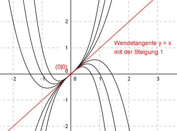

Aufgabe 59 Die Graphen von ganzrationalen Funktionen 3. Grades haben einen Wendepunkt mit der Wendetangente y = x im Koordínatenursprung. Wie lautet deren Funktionsgleichung? Allgemeine Form einer ganzrationalen Funktion 3. Grades: f(x) = ax3 + bx2 + cx + d f’(x) = 3ax2 + 2bx + c f’’(x) = 6ax + 2b 1. Hat einen Wendepunkt mit der Wendetangente y = x im Koordinatenursprung bedeutet erstens: f(0) = 0 --> a * 03 + b * 02 + c * 0 + d = 0 --> d = 0 2. Hat einen Wendepunkt mit der Wendetangente y = x im Koordinatenursprung bedeutet zweitens: f’’(0) = 0 --> 6a * 0 + 2b = 0 --> 2b = 0 :2 --> b = 0 3. Hat einen Wendepunkt mit der Wendetangente y = x (Steigung = 1) im Koordinatenursprung bedeutet drittens: f’(0) = 1 --> (b = 0 eingesetzt) a * 02 + c = 1 --> c = 1 Nur 3 Bedingungen (4 sind für eine eindeutige Lösung nötig) --> Kurvenschar: Gesuchte Funktionsgleichung: f(x) = ax3 + x Darstellung für 6 verschiedene a. Von links nach rechts: a1 = -0,5 a2 = -1 a3 = -2 a4 = 2 a5 = 1 a6 = 0,5 